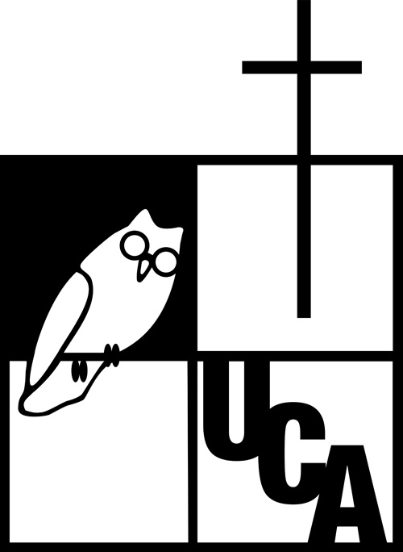

Taller 4 - Josue Zelada#
Sitio de documentación creado con MkDocs y Material for MkDocs.

Sobre este sitio
Este sitio fue desarrollado como parte del Taller 4 de documentación técnica en la UCA.
Consulta la Guía de uso para comenzar.
Sitio de documentación creado con MkDocs y Material for MkDocs.

Sobre este sitio
Este sitio fue desarrollado como parte del Taller 4 de documentación técnica en la UCA.
Consulta la Guía de uso para comenzar.